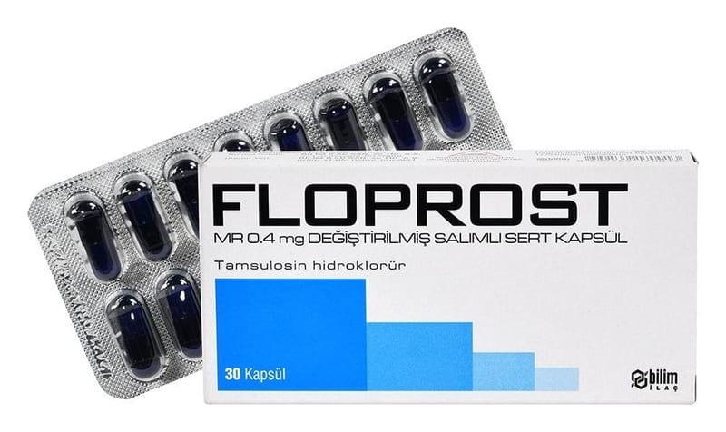

Floprost MR 0,4 mg Degıstırılmıs Salımlı 90 Sert Kapsül

Ne için kullanılır
KT · Bölüm 1Bu Kullanma Talimatı'nın bölümleri henüz ayrıştırılmadı; tam metin alt bilgideki TİTCK PDF bağlantısında.

Bu Kullanma Talimatı'nın bölümleri henüz ayrıştırılmadı; tam metin alt bilgideki TİTCK PDF bağlantısında.